ConsultDesignDistributeIntegrateSupport
If it sounds good,
it’s Sound Creations.
COMPANY PROFILE2026 EDITION · SINCE 2004

From a specialist audio business in Nairobi to a regional integrator working across four countries, our growth has followed one idea: one team that takes every project from site visit to handover.
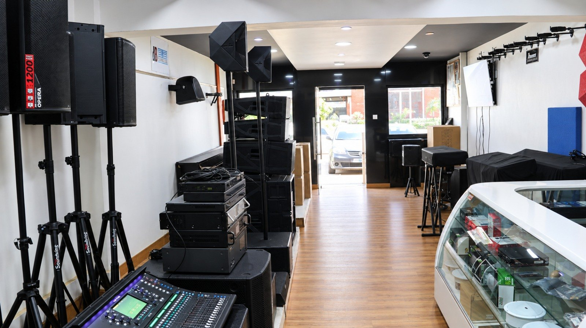
OUR SHOWROOM · MPAKA PLAZA, WESTLANDS, NAIROBIBegins as a specialist professional-audio company serving worship, events and commercial markets.
Incorporated as Sound Creations Ltd, formalising integration, distribution and support.
Kigali operations open; landmark work includes the RPF Rubavu Hall.
Operations begin in DRC Congo; Sound & Acoustics in the UAE with LC Acoustic, Dubai.
Authorised FANE partner for the region, with 850+ projects completed.
One partner across the full project life cycle, from the first site visit to long-term support, delivered by one accountable team.
We listen, assess the space and recommend the right approach.
Systems tailored to your room, application and budget.
Genuine products from trusted global brands, delivered reliably.
Installed, commissioned and tuned by our own team.
Training, servicing, genuine spares and rapid response.
 01
01Design and consultation across audio, acoustics, lighting and visuals, at every phase of your project.
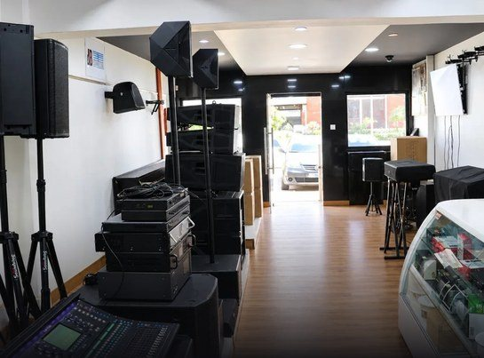
02Certified exclusive dealers for leading global brands, with reliable regional distribution and logistics.
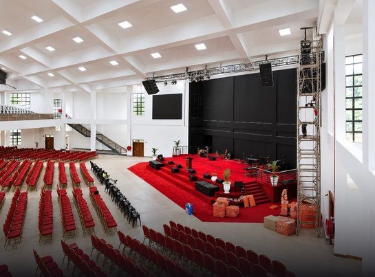
03Site mapping, system design, installation, commissioning, training and support for every audio and acoustic need.
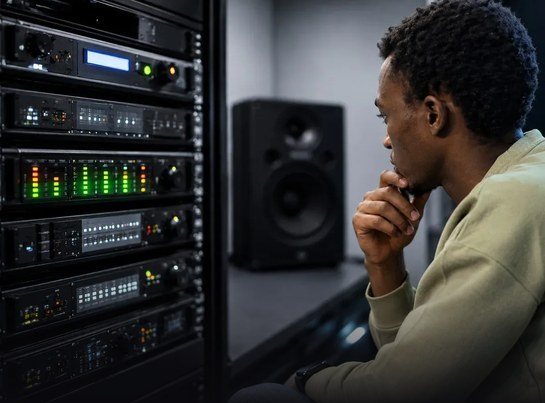
04Warranty management, genuine spare parts, servicing and technical support that keep your systems performing.
Complete sound and acoustic solutions, designed, installed and supported by one accountable team.
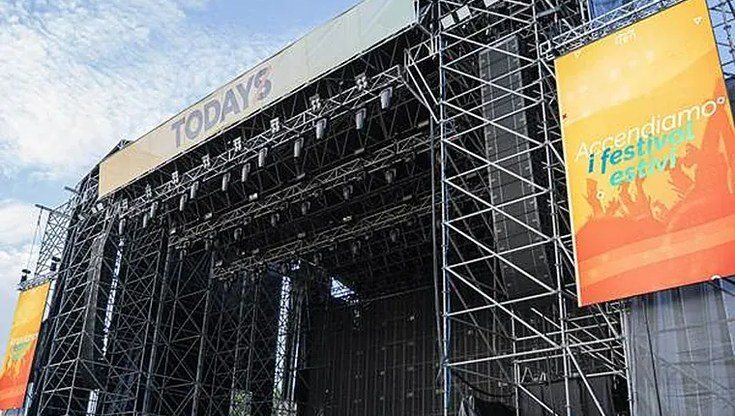
Powerful, intelligible and reliable sound systems designed around your room and application.
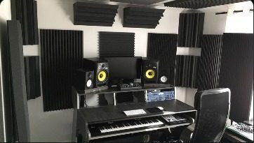
Acoustics treated as an engineering discipline: measure, analyse, design, treat and verify for clear, intelligible sound.
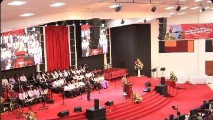
Professional sound and acoustic systems, installed, commissioned and calibrated by our technical team.

Powerful, intelligible and reliable sound systems, designed around your room and your application. We engineer complete systems, from loudspeaker simulation and system design to installation, tuning and operator training. Dispersion is predicted before a single speaker is hung, so sound pressure is evenly distributed across every seat.
For a round, 2,500-seat sanctuary with a central stage, we ran full system simulations and deployed dB Technologies Ingenia loudspeakers for equal coverage in every direction, with a 168-channel Midas Pro X console for multitrack recording.
KEY BRANDS dB Technologies · NEXO · Bose · Shure · Allen & Heath · Midas · FANE
Measure, analyse, design, treat and verify. Too little treatment leaves a room echoey; the wrong type makes it sound dull. We measure reverberation time, then specify the materials, quantities and positions that make speech and music clear, and design sound isolation separately.
Rockfon stone wool, Barrisol stretch ceilings and Asona seamless finishes.
Fabric-finished and decorative absorbers, diffusers and bespoke shapes.
Acoustic doors and isolation design for concurrent events.
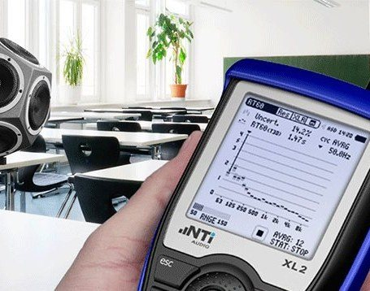
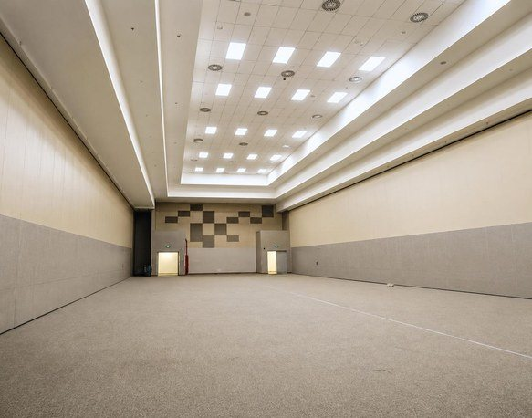
Concave walls created “whispering gallery” and focusing effects. An innovative diffuser design, a ceiling balanced between reflectors and NRC-rated absorbers, acoustic carpet and acoustic doors now deliver clear, evenly distributed sound.
Every sector has its own acoustic, operational and budget demands. We design around them.
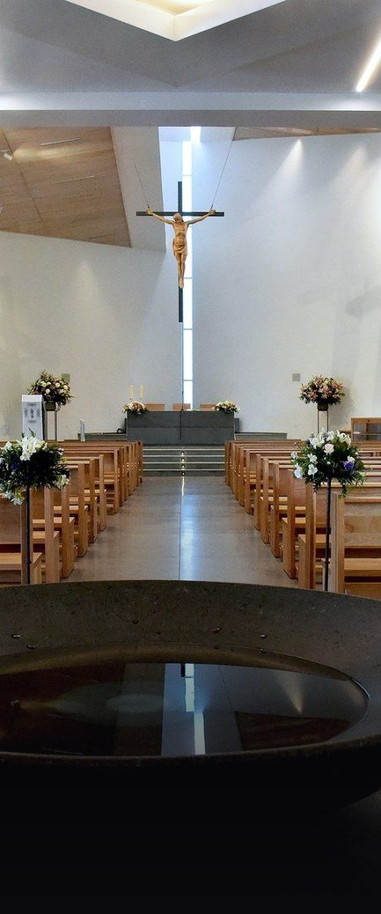
Clarity for the spoken word, power for worship music.
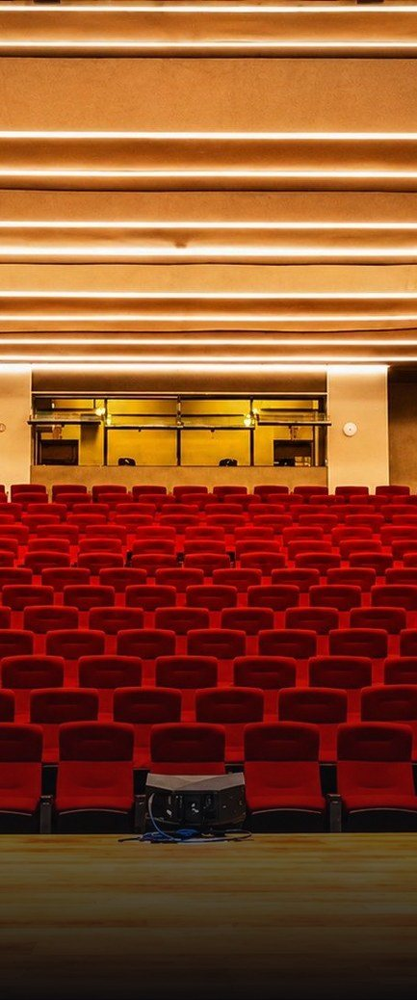
Auditoria, exam halls, lecture theatres and music schools.
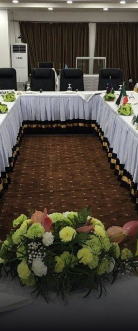
Boardrooms, conferencing and piped music.
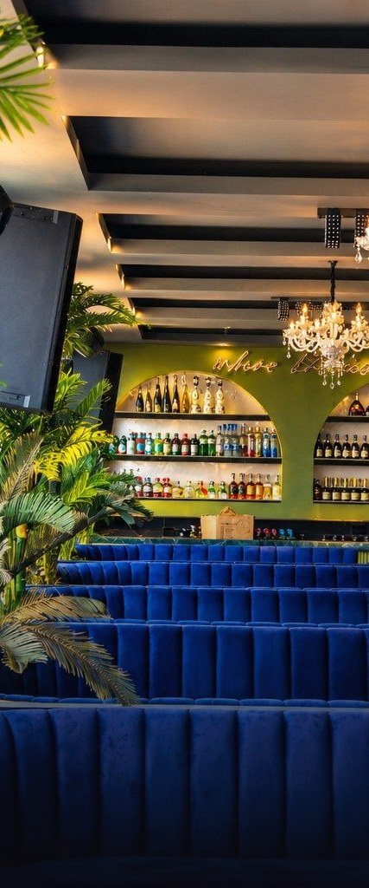
Hotels, lounges, clubs and restaurants.
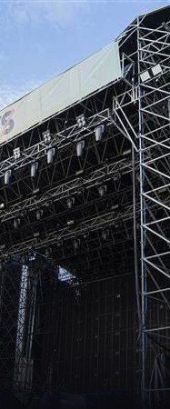
Touring, roadshows, expos and concerts.
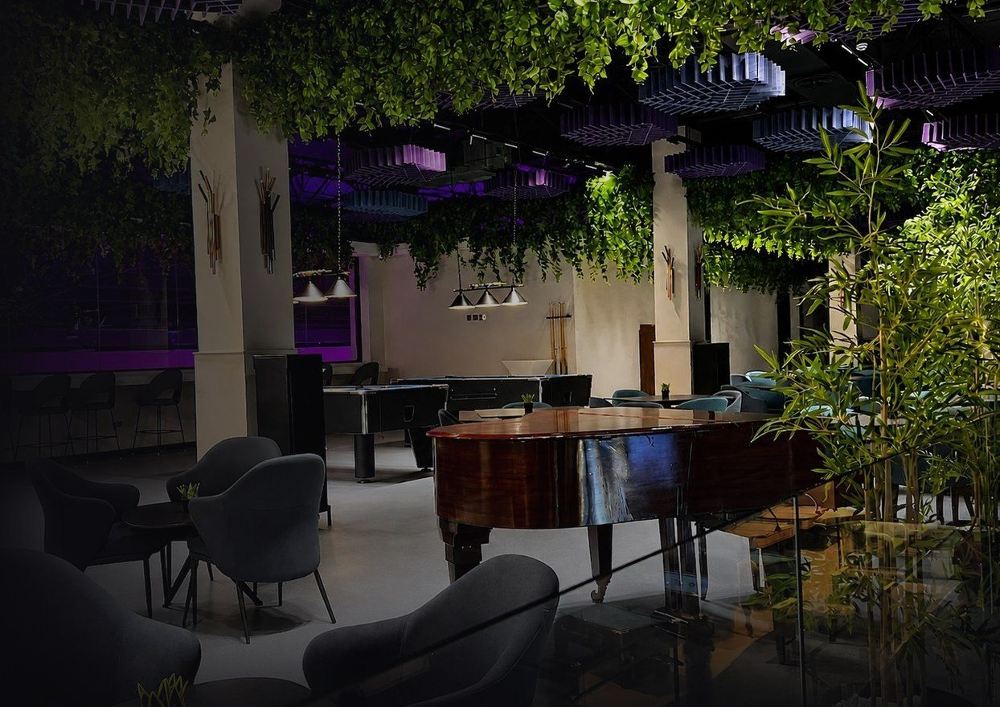
We take pride in showcasing work that has given new direction to quality audio, visual, lighting and acoustic solutions across Africa and the Middle East.

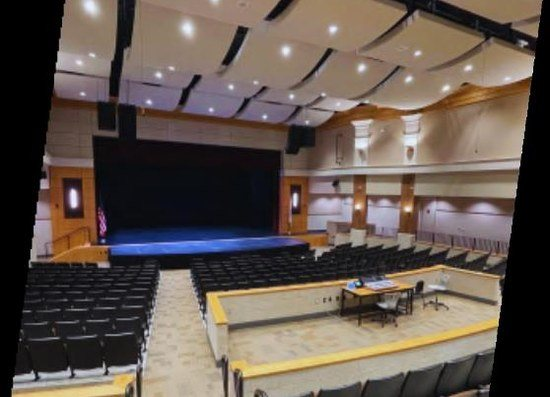
Auditorium · Nairobi, Kenya
The auditorium’s acoustic, audio and visual design was inspired by the school’s mission of nurturing the whole child. Side walls feature tree-shaped acoustic absorbers from TianGe Acoustic, adorned with rainbow LED lighting. A curved acoustic ceiling reflects sound from the stage evenly across the audience, complemented by acoustic seats, acoustic carpet and a fully treated back wall. The result unites acoustics, sound and light into a bespoke, inspiring space.
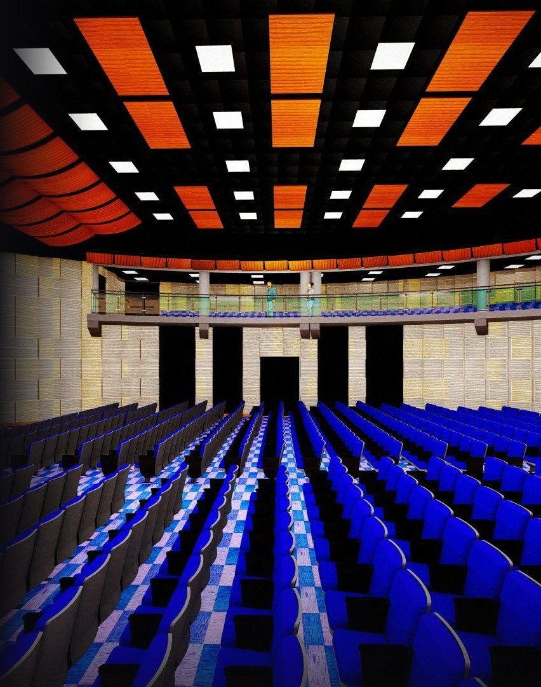
Multipurpose hall · Gisenyi, Rwanda
The hall’s concave walls naturally amplified reflections along their curved surfaces, creating the “whispering gallery” and “focus” effects that concentrate speech and music in specific areas. An innovative diffuser design mitigates these defects, while the ceiling balances sound reflectors and absorbing panels with approved NRC values for uniform propagation from stage to audience. Acoustic carpet, fully treated walls and acoustic doors complete a controlled auditory environment.


Expo venue · Westlands, Nairobi
Nairobi’s premier event venue offers 3,300 m² of column-free space within the Sarit Centre Phase III expansion. The brief: a multifunctional space able to host concurrent meetings, yet transform into a single hall. We treated a 7,000-capacity exhibition room and a 500-seat meeting area with precision-engineered wall panels and acoustic ceilings, and installed specialised acoustic doors that divide the exhibition hall into discrete rooms.


Main sanctuary · Nairobi, Kenya
One of Kenya’s leading mega churches, with a round 2,500-seat sanctuary and a central stage, needed sound that disperses equally in every direction, plus multitrack recording for live performance. Comprehensive system simulations forecast dispersion patterns and identified the optimal configuration for even SPL. Leveraging our dB Technologies partnership, we deployed Ingenia loudspeakers, with a 168-channel Midas Pro X console for expansive live recording.
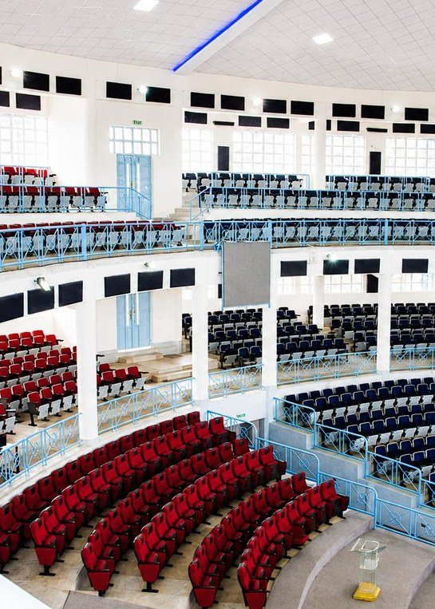
EducationAcoustic testing and reverberation analysis, tailored wall and ceiling treatment, then Absen LED screens for presentation and audience expansion at a university of about 89,000 students.
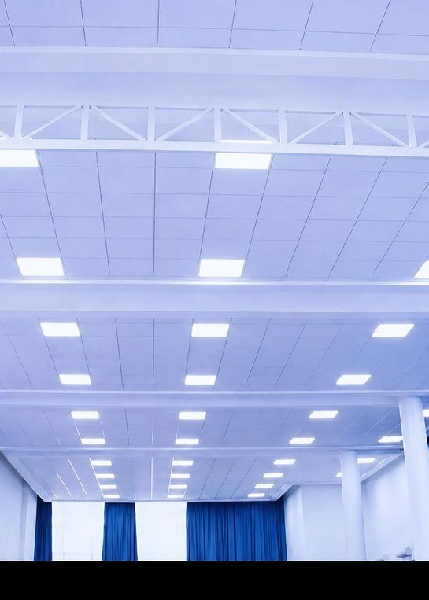
EducationAcoustic measurement, ceiling and wall treatment, a bespoke stage and a line array sound system for a multifunctional examination hall.
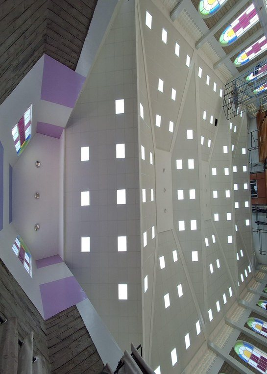
WorshipA Rockfon Arctic acoustic ceiling tamed excessive reverberation, improving speech intelligibility while keeping the worship space bright and open.
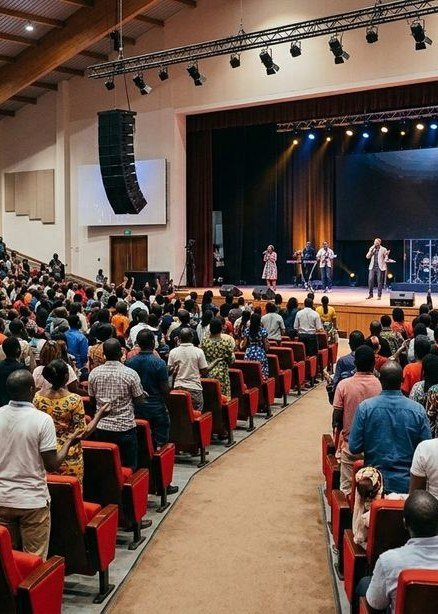
WorshipdB Technologies T-Series front of house, S30 subwoofers, IG1 under-balcony fills and FMX15 monitors, controlled by an Allen & Heath Avantis console.
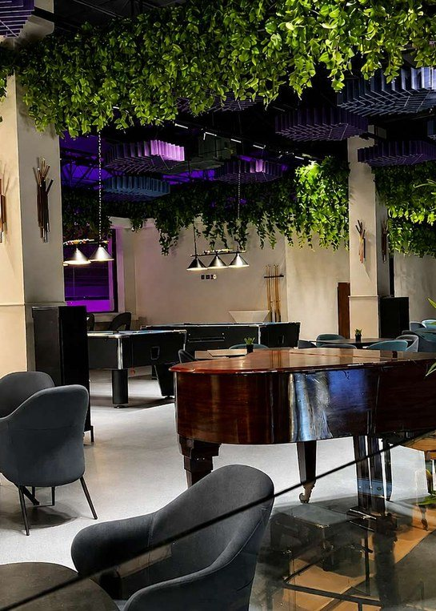
HospitalityA multi-zone Biamp, NEXO and Allen & Heath system, from discreet background music to immersive sound in the bowling and bar lounge.
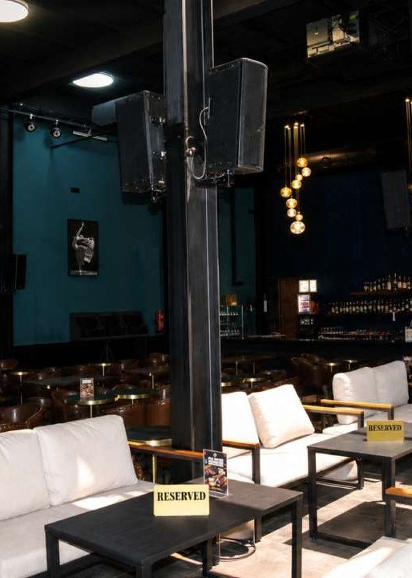
ClubA complete dB Technologies system with INGENIA 2, INGENIA 3 and OPERA 12 loudspeakers and dedicated subwoofers for powerful, precise club sound.
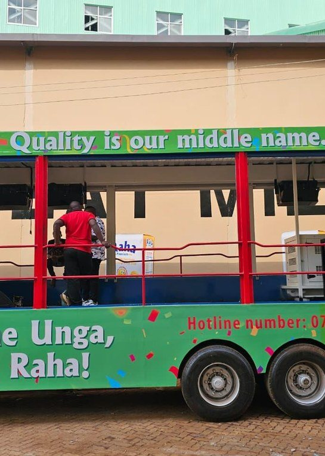
Mobile AVA complete mobile pro-audio platform: design, equipment selection, integration, configuration and tuning for brand activations and outdoor events.
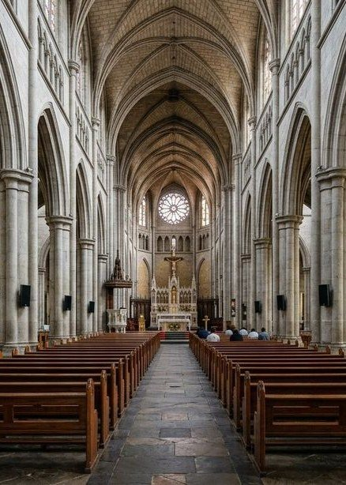
WorshipSound system design and installation for one of Nairobi’s most historic cathedrals, respecting its heritage architecture.
A selection of the corporate, faith and education organisations across Africa that rely on Sound Creations.
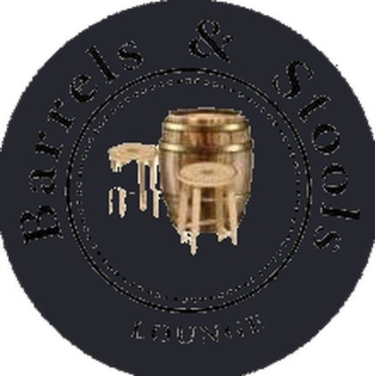
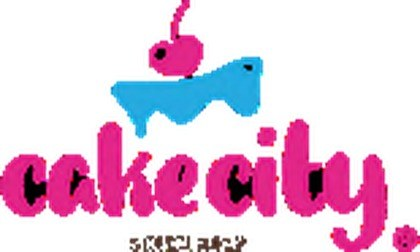
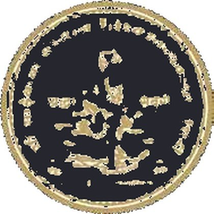
Certified authorised dealer for a portfolio of 15 leading global brands, supplying direct to customers, to resellers at trade prices, and manufacturer-to-client.


Authorised FANE partner for the region. Professional loudspeaker components engineered in the UK since 1958.
Listed by Bose Professional as its Kenya sales office.
Listed by Allen & Heath as its distributor in Kenya.
Partnership established in 2024, supporting our UAE acoustics operation.
Offices in Kenya, Rwanda, DRC Congo and the UAE. Distribution also reaches Tanzania from Nairobi. Middle East: Dubai sourcing and logistics hub. Asia: direct manufacturer and supply partners across South and East Asia.
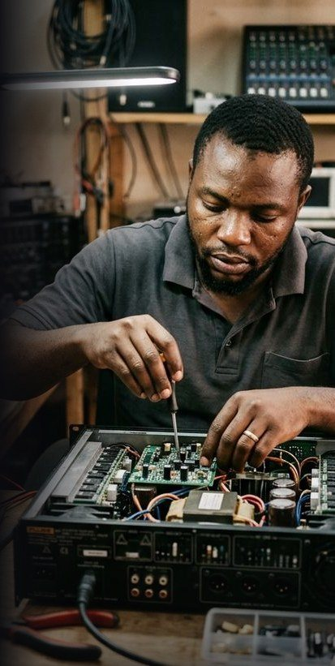
Two decades designing and delivering systems for the region’s most demanding spaces.
Consultation, design, supply, installation, commissioning and support under one roof.
Genuine products from leading global brands with full manufacturer warranty.
Measurement and simulation before specification, verified to international standards.
Operations in Kenya, Rwanda, DRC Congo and the UAE, backed by reliable logistics.
Preventive maintenance, genuine spares, operator training and rapid response.
They have Amazing products and quite affordable for the quality..100% recommend if you want sound systems or other musical stuff
Triad Kuolo · Google reviewFully equipped music store. You get all music and studio equipments under one roof. The salesman has a wealth of information and advices professionally
Michael Odida · Google reviewReally good store. All kinds of equipment and very knowledgeable and helpful staff. Definitely the shop to visit for any audio/video needs.
Aalawy Balala · Google reviewI had a fantastic experience with Sound Creations Ltd.! They provide high-quality sound equipment and professional audio solutions, and their expertise truly shows. The staff was incredibly professional, knowledgeable, and ready to help me find exactly what I needed.
Brandon Tengeya · Google reviewHeadquartered in Nairobi, with offices in four countries across East and Central Africa and the Middle East, and distribution into Tanzania.

HEAD OFFICE · MPAKA PLAZA, WESTLANDS
Mpaka Plaza, Mpaka Road, Westlands, Nairobi
Kigali: sales, projects and support
Kinshasa: projects and support
Dubai: sourcing, logistics and acoustics
Tell us about your space and application. Our technical team will help you design, supply, install and support the right solution.
Mpaka Plaza, Mpaka Road
Westlands, Nairobi, Kenya
Mon – Fri: 9:00 am – 5:30 pm
Sat: 9:00 am – 1:30 pm
Sunday: Closed